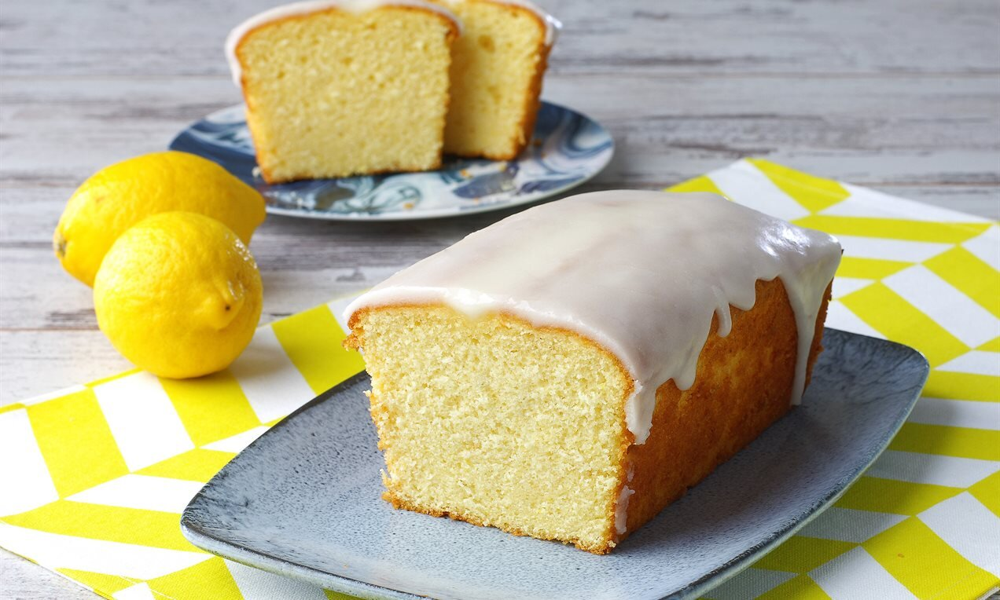

Kaç Kişilik? :6-8 Kişilik Hazırlanma Süresi: 30 dk Pişirme Süresi: :10 dk
MALZEMELER
- 3 adet yumurta
- 1 su bardağı şeker (200 gr)
- 3/4 (bir yarım+bir çeyrek) su bardağı yoğurt (150 gr)
- 1,5 su bardağı un (200-220 gr)
- 2 adet limon kabuğu rendesi
- 1 adet limon suyu
- 1 paket kabartma tozu
- 1 paket vanilya şekeri
- 1 çay kaşığı zerdeçal (isteğe bağlı, rengi için)
SOSUNUN MALZEMELERI
- 2 yemek kaşığı süt
- 1 yemek kaşığı limon suyu
- Yarım su bardağı pudra şekeri
NASIL YAPILIR?
- Uygun bir kaba rendelenmiş limonu, şekeri ve limon suyunu ekleyin ve iyice karıştırın.
- Ardından yumurtaları ekleyip karıştırmaya devam edin.
- Daha sonra yağı, yoğurdu, zerdeçalı, kabartma tozu ve vanilya şekerini ilave edip kısa karıştırın.
- Ardından unu eleyerek ekleyin ve bir spatula ile dıştan içe doğru karıştırıp homojen bir kıvam almasını sağlayın.
- Kek hamurunu yağlanmış baton kalıba alın ( veya farklı bir kalıpta kullanabilirsiniz)
- Önceden ısıtılmış 170 derece alt üst ayar fırında 45-50 dk pişirin.
- Soğuyunca sos malzemelerini karıştırıp üzerine sürün. Afiyet olsun. 🍋.
